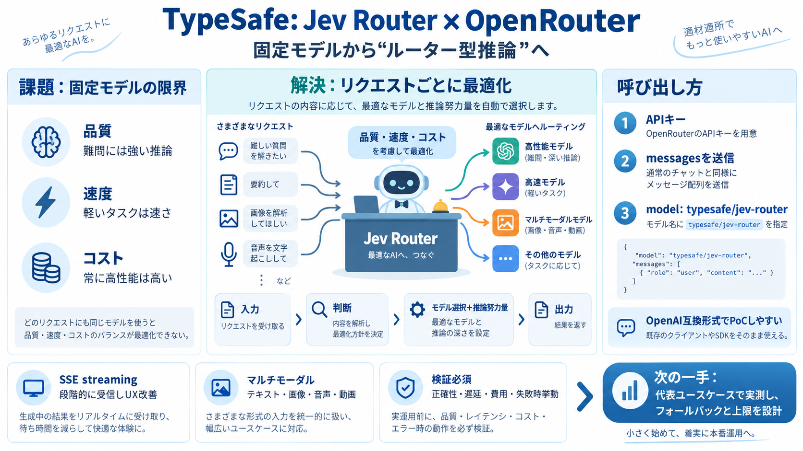

Typesafe API and Models | OpenRouter
Jev Router has the largest context window of any Typesafe model on OpenRouter, accepting up to 1,000,000 tokens per requ…

Jev Router has the largest context window of any Typesafe model on OpenRouter, accepting up to 1,000,000 tokens per requ…
Model ID: `typesafe/jev-1.13`. The `~typesafe/jev-latest` alias tracks the newest release. Input: text, as a `state` ob…
31 distinct model releases in September 2026 are verifiable against a dated source, from 14 labs. 9 shipped with open we…
1. 1.Image 4: Favicon for meta Muse Spark 1.3by meta 6.9K 63.8% 2. 2.Image 5: Favicon for deepseek DeepSeek …
## At a Glance 5 in 10d Frontier launches: Fable 5.1, GPT-6 Astra, Gemini 3.8 Flash, Muse Spark 1.3, V4.1-Flash — Sep …